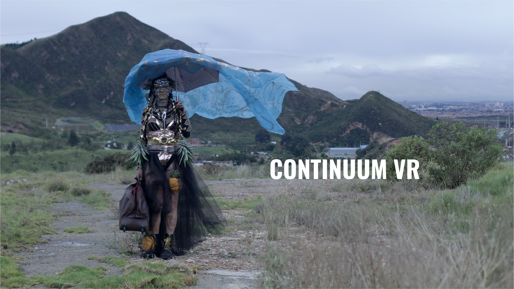
Continuum VR
“Continuum VR” is a space to rest from defence, a safe place to stop and reflect on the violence taken out upon them as individuals, but also as part of the trans population, brought on by social structures and by the multiple dynamics of the armed conflict in Colombia.
Continuum VR is an invitation to immerse oneself in the lives of six transgender women sex workers and their stories, built and told by them.
- Format
- 360° video
- Duration
- 16 minutes
- Platforms
- VR
- Audience
- 16+
- Language
- Spanish
- Setting
- Colombia
- Original idea
- Red Comunitaria Trans
Daniela Maldonado Salamanca
Pascale Espinosa
PaulX Gempeler - Performers
- Daniela Maldonado
Franchesca Caballero
Nini Johana Palomino - Performers
- Natalia Bernal
Valeria López
Bárbara Sánchez
One of the most important challenges we have with this project is the construction of the immersive and performative experience.
This project is based on stories of violence that are narrated and constructed by their own protagonists. That is to say, it is the person herself who creates the narrative and the aesthetics with the help of the artists that we work with collectively.

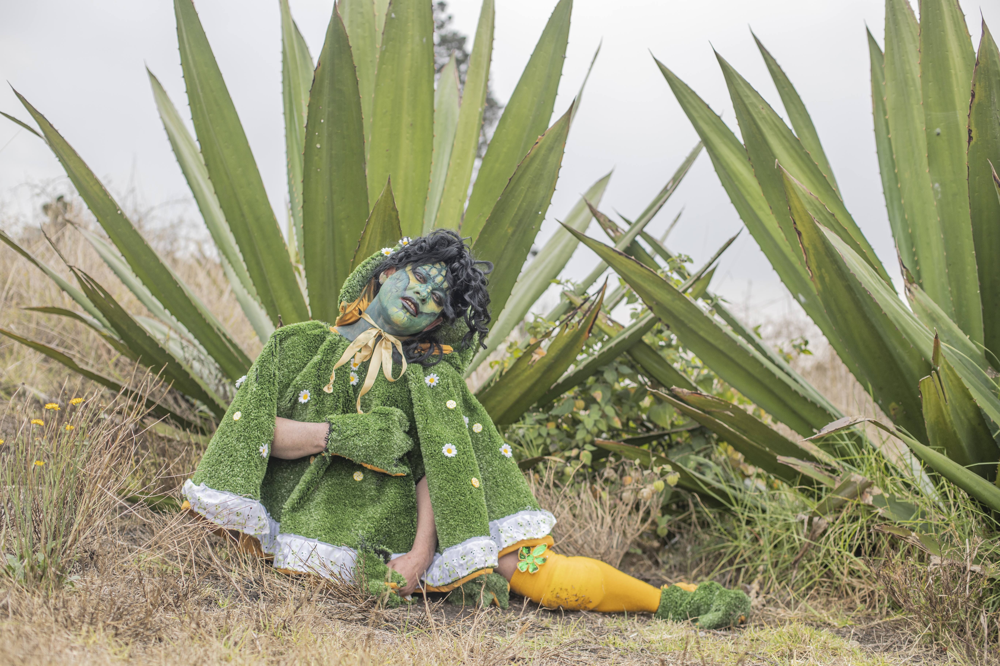
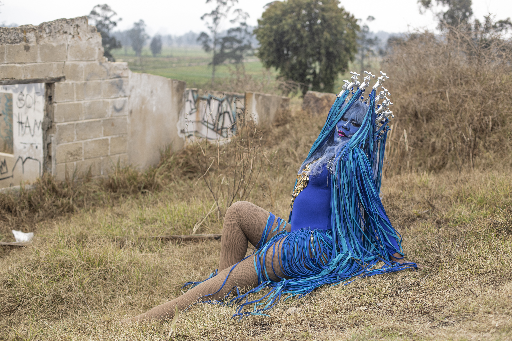
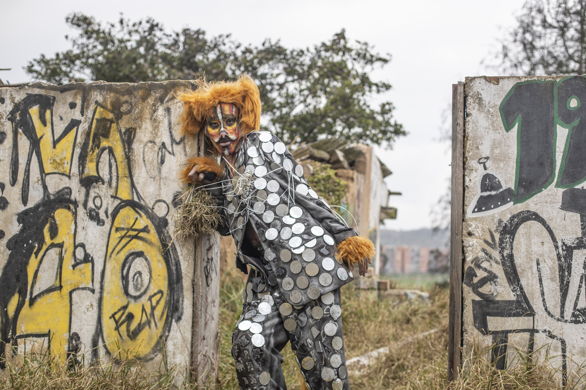
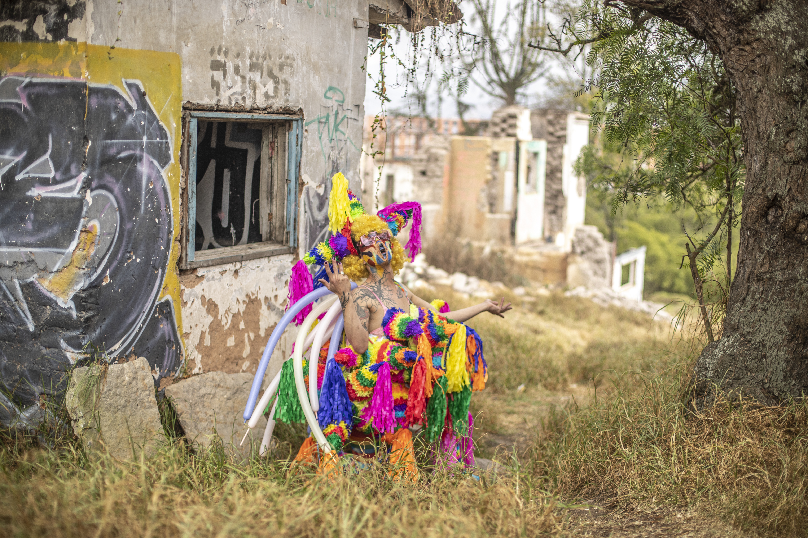
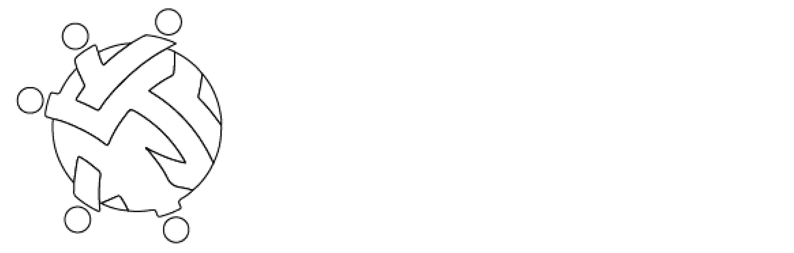
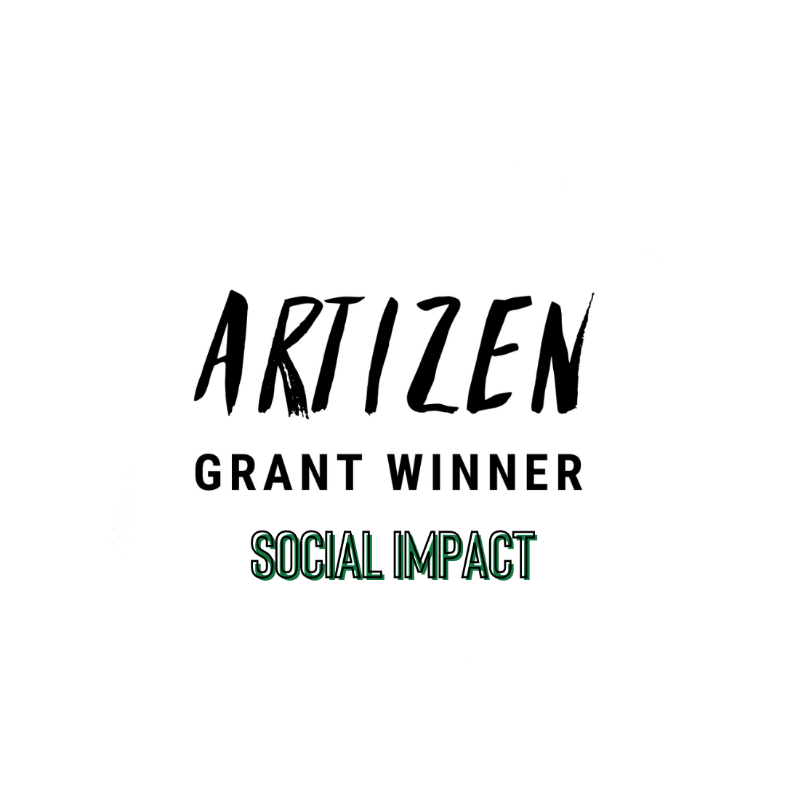
Creation Labs
A creative space to exchange ideas and histories. Exercises of construction and deconstruction, in virtual and physical, to collect and shape the next step of Continuum, the immersive media.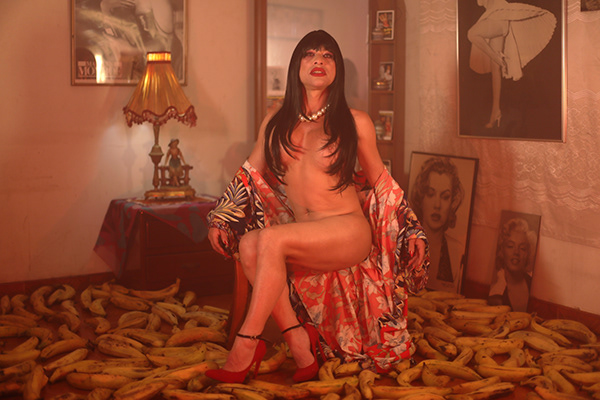
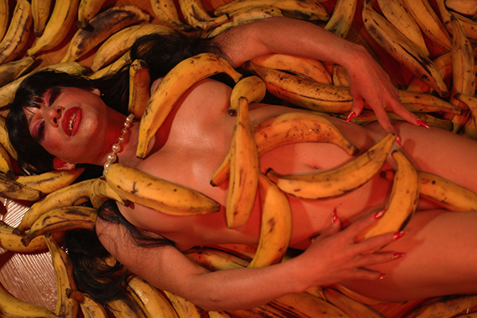
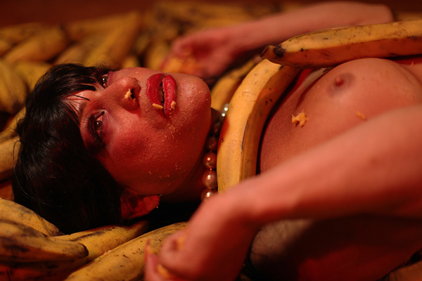
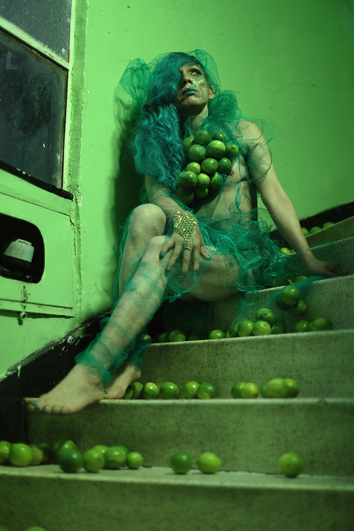
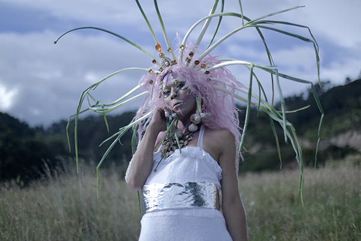
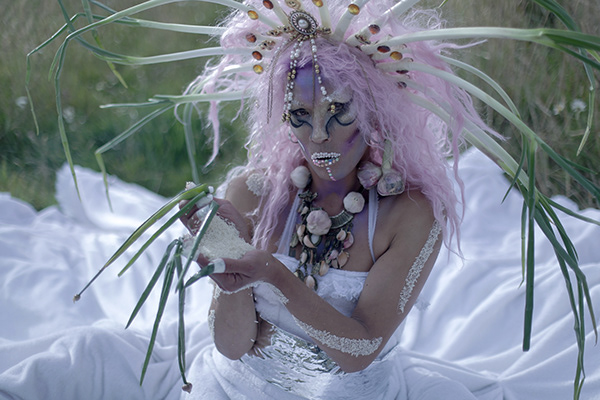
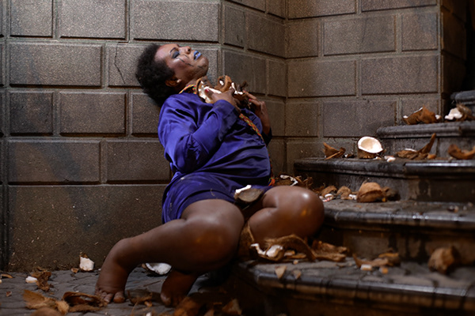
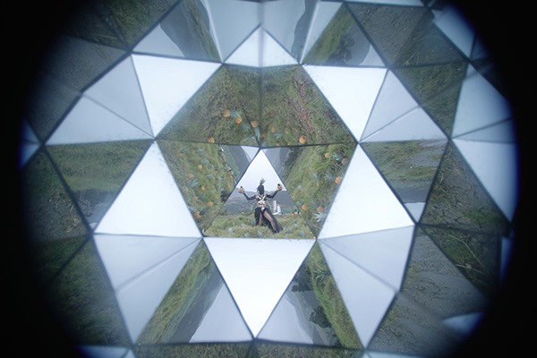
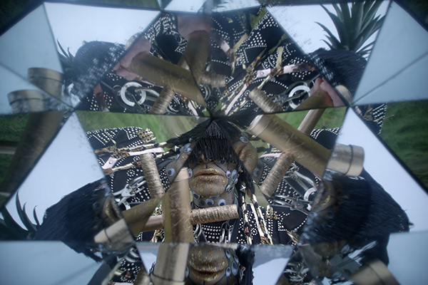
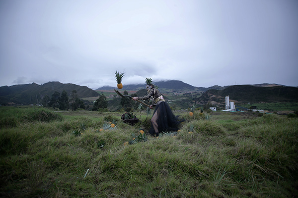
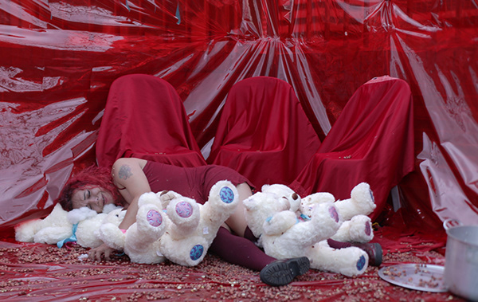
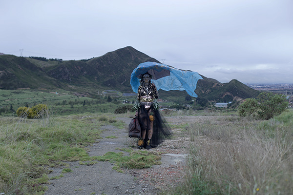
Photos by: